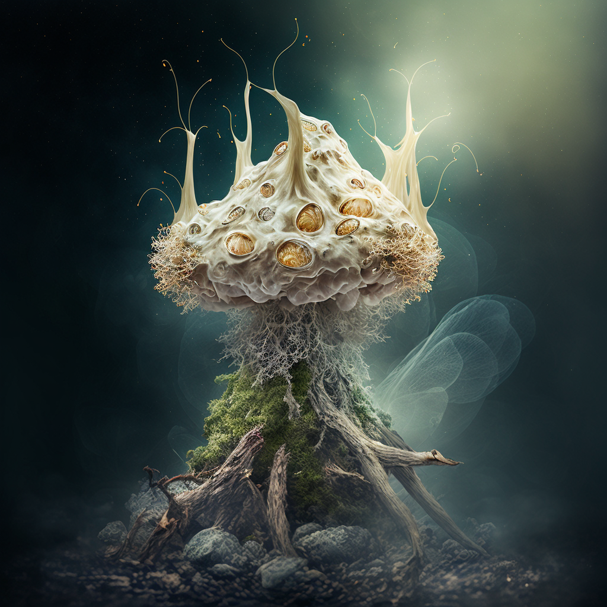

In a distant dimension far removed from Earth, a realm teeming with toxic energies and volatile organisms, the Symbiotic Parasite came into existence. It thrived in a dimension often referred to as the "Venom Realm," where survival hinged on one's ability to both exploit and sustain other life forms. Unlike traditional parasites, which merely drain their hosts, the Symbiotic Parasite evolved to form intricate, mutually dependent bonds with its victims. Its host would gain enhanced abilities while the parasite fed off its life force, a delicate balance that sustained them both. However, the Symbiotic Parasite always sought more powerful hosts to amplify its capabilities.
When a rift between dimensions opened unexpectedly, the parasite found itself violently pulled into the realm of Earth. Thrust into an unfamiliar world, it struggled to survive. Earth's atmosphere, so foreign compared to the toxic gases of the Venom Realm, was nearly suffocating. Desperate for sustenance, the parasite began to seek out suitable hosts in a mad scramble to secure its survival. At first, it attached itself to small animals—cats, dogs, pigeons—slipping unnoticed into urban environments. The parasite would latch onto their brains, devour sections of the host's neural tissue, and take control of their movements. Its ability to mimic the host’s normal behavior ensured it could remain hidden, while simultaneously seeking out more advanced hosts.
As the parasite adapted to Earth's conditions, it realized that human beings were far superior hosts, offering greater cognitive power and the ability to influence their surroundings. Over time, it evolved to target humans, slowly learning to manipulate them not just on a biological level, but also to leverage their emotions and intellect. What began as simple mind control soon turned into something more profound—the parasite could access its host's memories, gaining insight into human society, politics, and history. Each new host offered the parasite fresh knowledge, enabling it to manipulate larger segments of the population.
Through centuries, the parasite's influence began to intertwine with real historical events. Unbeknownst to humankind, many key moments in history—from the rise of empires to the collapse of civilizations—were shaped by hosts controlled by the Symbiotic Parasite. While human society believed these events were driven by ambition, greed, or power, a darker force was often at play, steering the course of history. However, the parasite learned to maintain its secrecy, for open detection would mean mass eradication. It evolved to pass between hosts silently, carefully, and without detection, moving from animals to influential figures as it quietly molded the world.
In the present day, the Symbiotic Parasite continues to thrive, now even more adept at masking its existence. It has learned how to hide in plain sight, passing from one human host to the next without a trace. Its ultimate goal is unknown, as each new generation of parasites seeks something different—some wish for mere survival, while others harbor ambitions to dominate the world. As human civilization advances, the parasite too evolves, always staying one step ahead, waiting for the perfect moment to fully reveal itself, blending its existence into the very fabric of human history.
